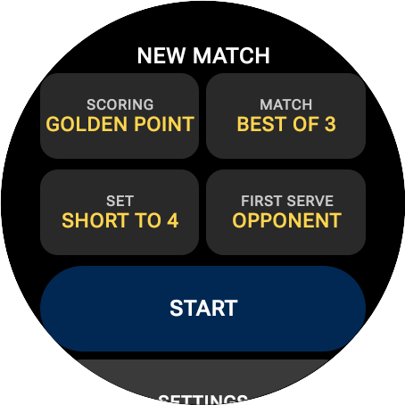
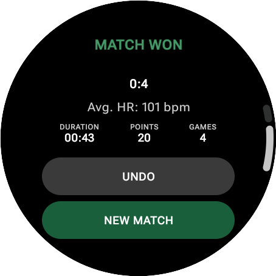
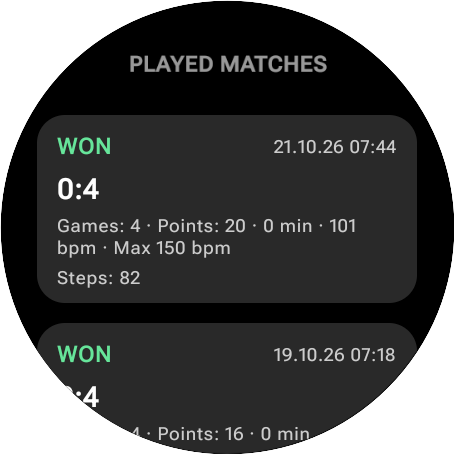
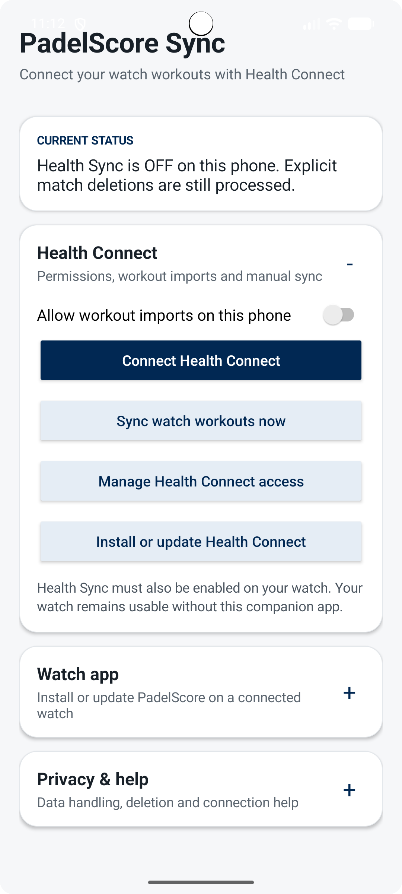
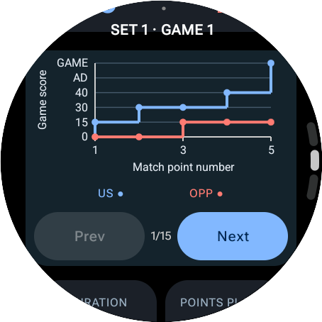
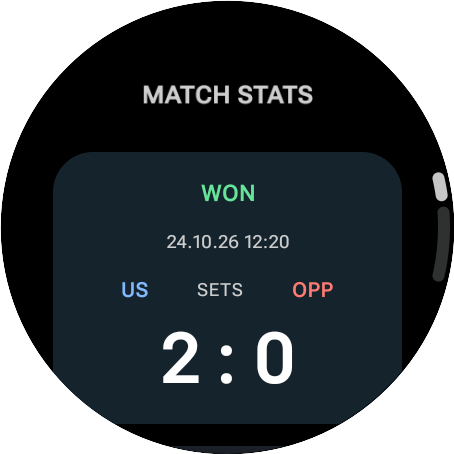
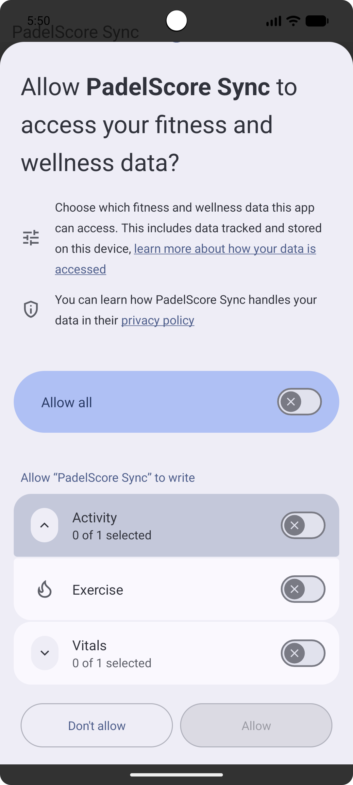

Flexible scoring
Choose Classic Advantage, Golden Point or Star Point, with one-set, best-of-three, short-set and tie-break formats.
Built for Wear OS 3+
A privacy-focused padel scorekeeper for your wrist, with flexible match formats, local history, detailed statistics and optional fitness tracking.

Everything needed courtside
Configure the rules before play, then record every point with large, watch-oriented controls.
Choose Classic Advantage, Golden Point or Star Point, with one-set, best-of-three, short-set and tie-break formats.
Follow service rotation, Deuce and Advantage court indicators, and the 1-2-2 tie-break service sequence.
Large touch targets, haptic feedback, undo support and a short input lock help prevent accidental double taps.
The current match is stored locally, so scoring can continue after leaving or restarting the application.
Launch from a Tile or supported watch-face complication and select a configurable low-power ambient display.
Score for either team with configurable wrist gestures while looking at the watch.
From first serve to final point
Set up the format, keep score, review the result and revisit previous matches without creating an account.



Understand every match
Review match totals, set and tie-break results, game progression and the complete rally sequence. Completed matches remain in private local storage on the watch.



Optional Android companion
PadelScore Sync can receive match history from the paired watch, show extended statistics and write supported completed workouts to Android Health Connect.
Watch-to-phone transfer uses the Wearable Data Layer. The companion is optional and is not required for scoring or local match history.
Fitness, only when you want it
With the applicable permissions and supported hardware, Padel Score can record useful activity information during a match.
Fitness tracking can remain disabled. Core scoring continues to work without health permissions.
Privacy by design
Padel Score has no advertising, analytics, developer-operated telemetry, user accounts or developer-operated cloud storage. Match information is stored locally and optional transfers go directly between paired devices.
Read the full privacy policyGet Padel Score
Install a release APK from GitHub, or join the Google Play closed test on a compatible Wear OS watch.
Download the current Wear OS APK. The optional Android companion is available with supported releases.
View releasesJoin the tester group first, then accept the testing invitation with the same Google account.
Availability can depend on the tester account, country and device compatibility.
Apache 2.0 licensed
Inspect the code, report a problem, suggest a feature or contribute an improvement on GitHub.